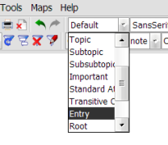
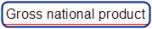
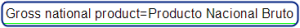
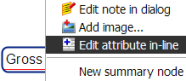

How to fit a glossary Entry into a mind map node?
Here is the guideline to fit a glossary Entry into a mind map node:
Apply the Entry style to the node
|  |
The Entry style has to be defined beforehand. To define a style[4], refer to Freeplane wiki.
Input the most significant terms in the node core
Double-click the node core[1].
Input the term describing the best the concept you are talking about.
Optionally, if you work mainly with two languages, append an equals sign (symbol
=)followed by the appropriate term in the other language.
If a node core contains no equal character, it is considered as a Conceptual Entry. Such Entry focuses on the concept itself (it may be multilingual). The language to be input in the node core should correspond to the languageID[5] feature.
If a node core contains an equal character, it is considered as a Bilingual Entry. Such Entry focuses on the term in a primary language called the source language. The language to be input in the node core[1] before the equals sign (i.e. the source term) should correspond to the sourceLanguage[5][6][5] feature. The language to be input after the equals sign (i.e. the target term) should correspond to the targetLanguage[7][5] feature.
If you study economics, you are likely to create a Gross national product conceptual entry. |  |
If you have to translate into spanish the term "gross national product", you should create the following bilingual entry: Gross national product=Producto Nacional Bruto |  |
Add the features either in the node attributes.
The basic procedure is to add a node attribute[3] for each feature:
|  |
- Node core
The node core is the most important and central part of a node. It cannot be hidden. If the node style is
Concept, then the following rule applies: if the node core contains an equal character, then Pangloss handles it as a Bilingual Entry, else it handles it as a Conceptual Entry. - Node note
The node note is usually presented as hover text. If you prefer to see them under the node details, click in the menu
View > Notes > Display notes in map. If you have a large monitor and often need to edit notes, we suggest you setView > Notes > Display note panel. - Node attributes
A node can contain some structured information called attributes. Each attribute is composed of a name and a value, and displayed in a 2 column table.
- Node style
The layout of a node (fonts, colors, edges, clouds, etc) can be customized throug a recorded set of parameters, which is called a style. This notion is similar to the style you can find in popular word processors like Microsoft Word, OpenOffice Writer, LibreOffice Writer, etc. Pangloss processes only the nodes of the following given style:
Concept. - languageID
This Entry feature is the identifier of the language that is included in the Entry. Typically, this is the language of the definition of a concept.
You should use normalized (e.g. ISO) codes. You may use a locale instead of a language code. Examples: ENG, EN, en-US.
- sourceLanguage
In a translation-oriented terminology database, this Entry feature is the identifier of the language in which the original text is written. You should use normalized (e.g. ISO) codes. You may use a locale instead of a language code. Examples: ENG, EN, en-US.
- targetLanguage
In a translation-oriented terminology database, this Entry feature is the identifier of the language into which the text is translated. You should use normalized (e.g. ISO) codes. You may use a locale instead of a language code. Examples: ENG, EN, en-US.
- objectLanguage
This Entry feature is the identifier of the language for which information is provided, i.e. the language of the term feature.
You should use normalized (e.g. ISO) codes. You may use a locale instead of a language code. Examples: ENG, EN, en-US.
- Pangloss user guide
- Intro
- Input an Entry
- Details and notes
- Reference